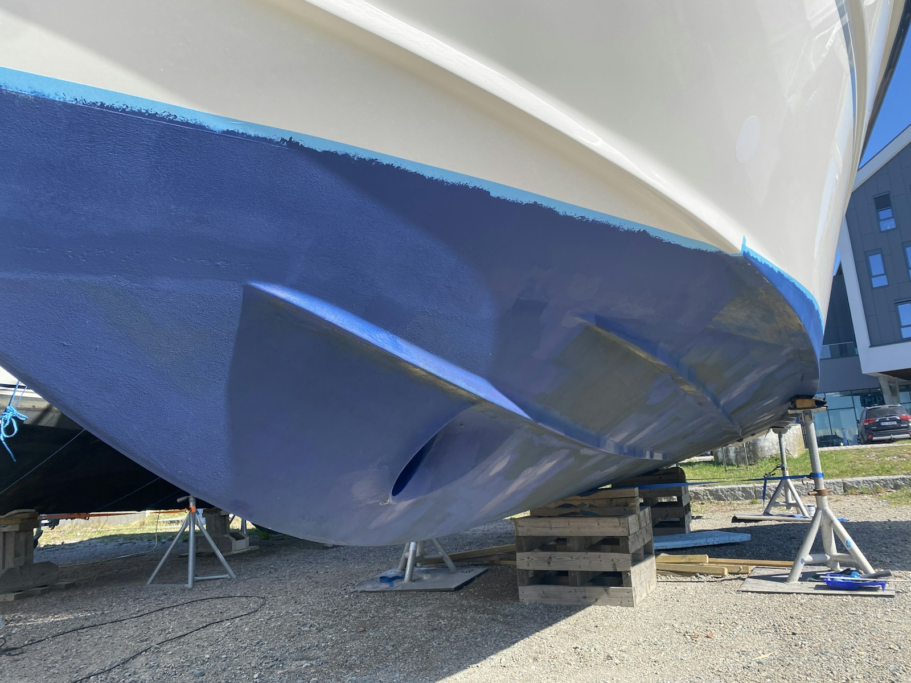
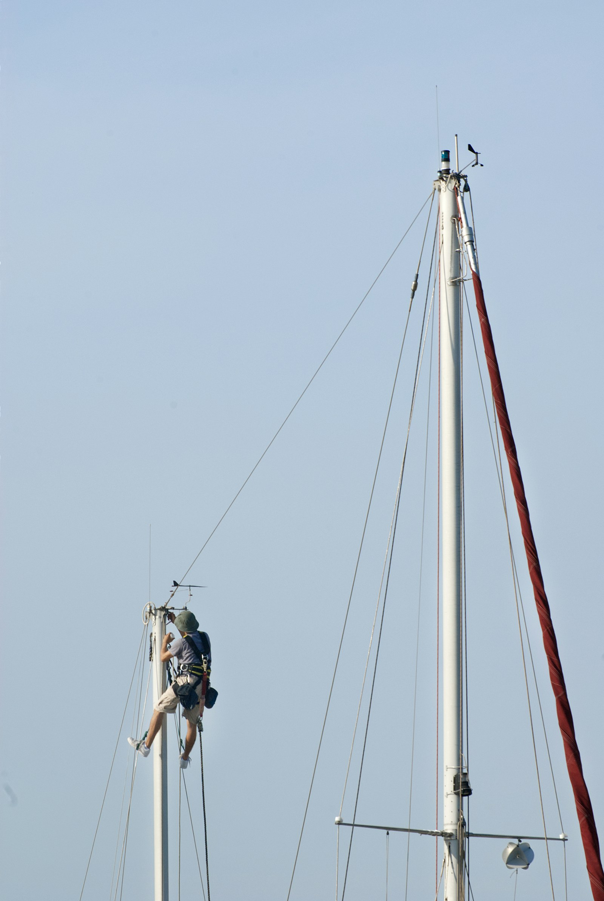
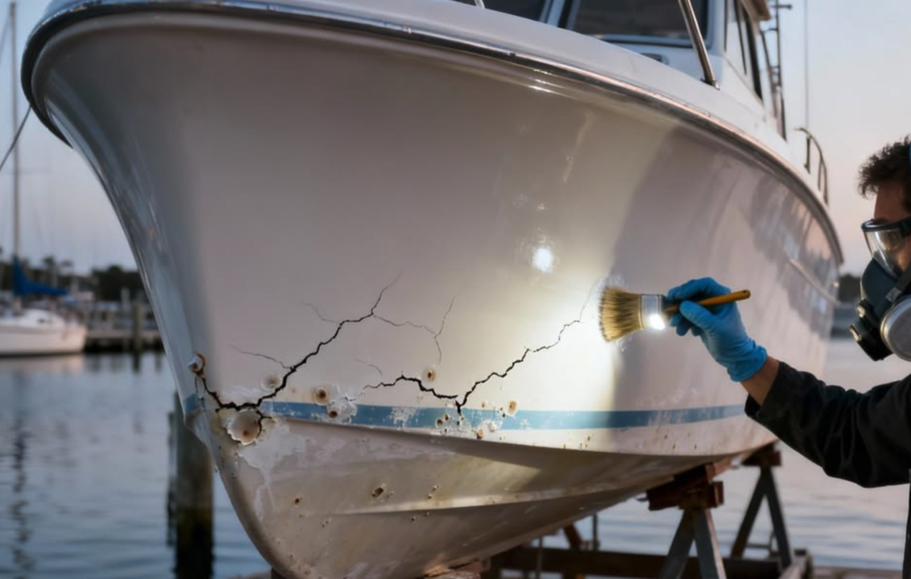
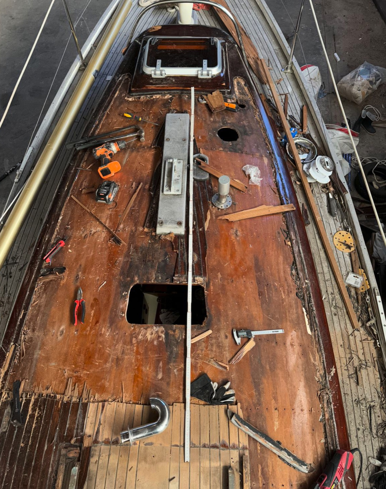
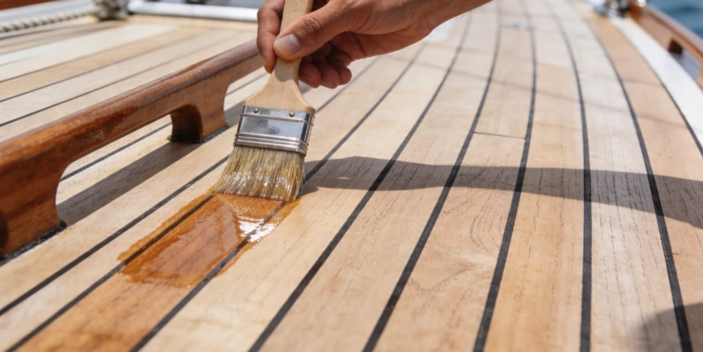
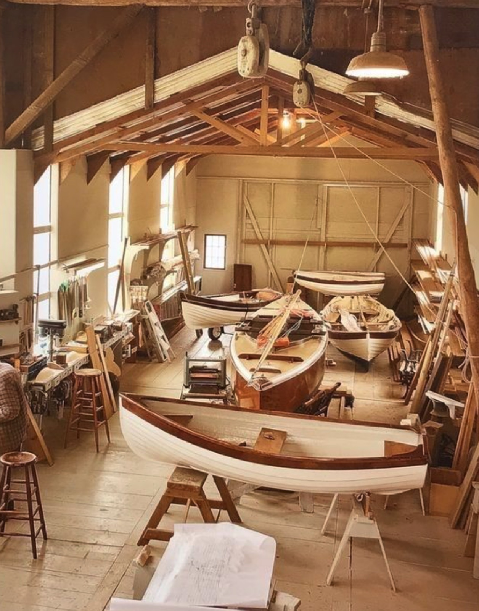
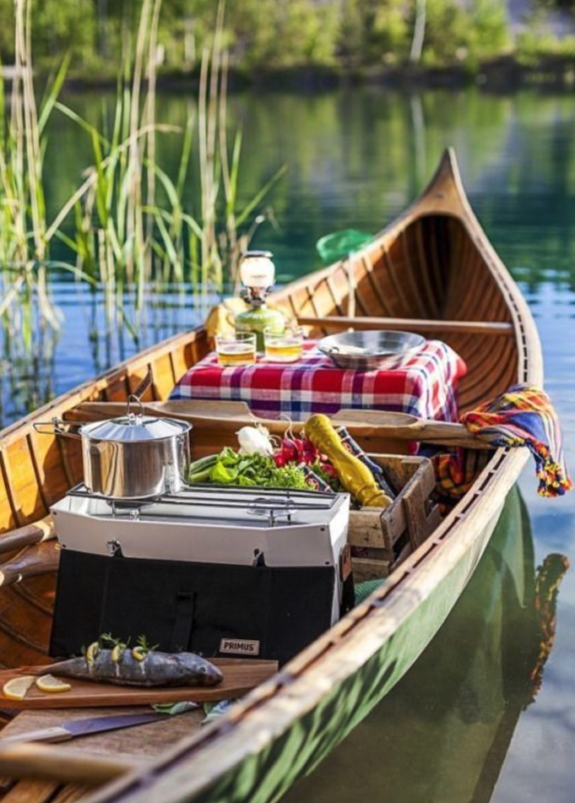

Veneiden korjaukset
Puuveneet, lasikuitu ja purjeveneet käsiemme kautta.
- Puuosien korjaukset ja pintakäsittelyt
- Epoksityöt, pinnoitukset, tiikkien vaihdot
- Myrkkymaalien poistot
- Lasikuitukorjaukset
- Kölipulttien teko ja vaihto

Emme voi muuttaa tuulen suuntaa, mutta voimme säätää purjeita.
Puuveneet, lasikuitu ja purjeveneet. Kausihuollot, erikoistyöt ja asiantunteva arviointi pääkaupunkiseudulla.
Palvelut jakautuvat neljään kokonaisuuteen. Tapauskohtaisissa töissä arvio kannattaa pyytää — hinnat vaihtelevat veneen koon ja kunnon mukaan.
Puuveneet, lasikuitu ja purjeveneet käsiemme kautta.
Vene valmiina joka kauteen — kevät ja syksy.

Sähköt, rigaus, konsultointi ja materiaalit.

Epäselvä vaurio tai iso projekti? Tuomo katsoo tilanteen ensin.





Huoltokalenteri täyttyy nopeasti — ota yhteyttä hyvissä ajoin.
Huhtikuu–toukokuu. Veneen pesut, pohjamaalaukset, moottorin tarkistus ja vesillelasku. Varaa aika hyvissä ajoin — kalenteri täyttyy nopeasti.
Syyskuu–lokakuu. Talvisäilytyspesu, suojaus, moottorin talvettaminen ja mahdolliset korjaukset talven aikana. Vene valmiina seuraavaan kauteen.
Korjaamon ohella Pesosenpuodilla kulkee oma tarina — jäätelövene, joka on yhtä paljon asenne kuin ajoneuvo. Se muistuttaa siitä, miksi veneet ovat olemassa: elämyksiä varten.
Seuraa matkoja ja korjausprojekteja Facebookissa.
Seuraa Facebookissa →
Kerro veneestäsi ja työn tarpeesta — saat arvion siitä, miten korjaus kannattaa toteuttaa. Kuva veneestä tai vauriosta auttaa jo ensimmäisessä vastauksessa.
Viesti lähetetty!
Tuomo vastaa yleensä saman päivän aikana.
Korjauspalvelumme on vedenpitävä.